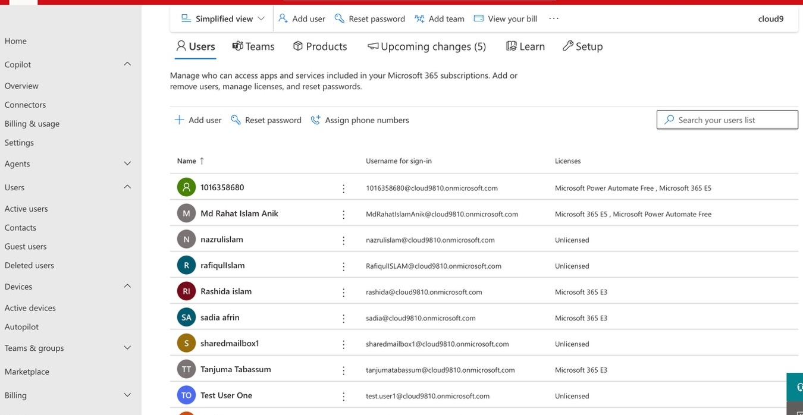
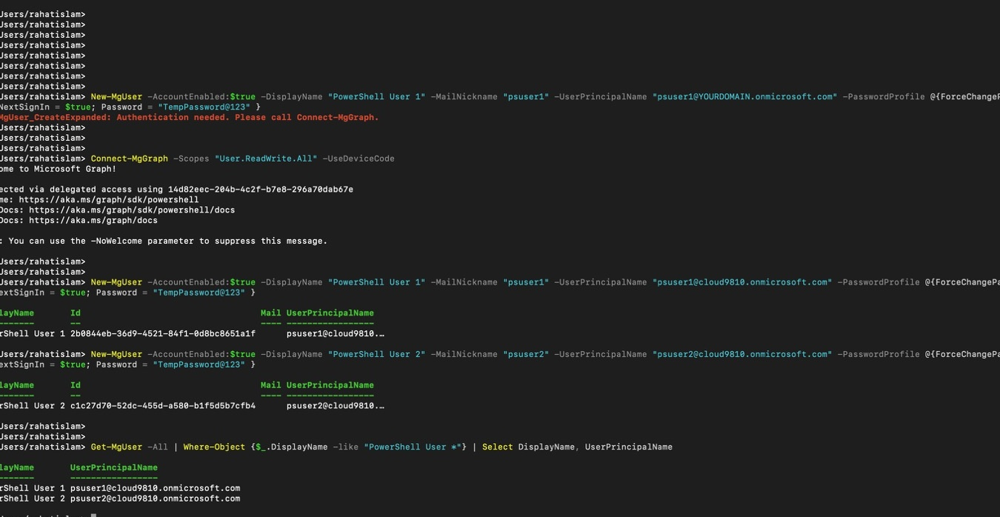
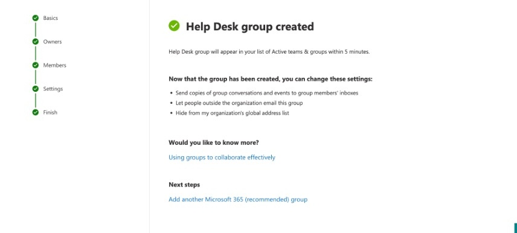
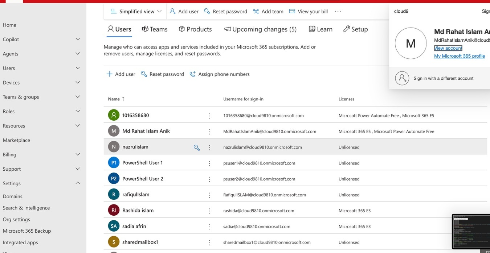

Cloud Nine Wellness operates three boutique fitness studios across the Greater Toronto Area — King West, Yorkville, and Liberty Village — with a combined staff of approximately 17 employees spanning front-desk coordinators, fitness instructors, studio managers, and corporate operations.
The business had been operating without a managed identity or email system, relying on personal accounts and shared spreadsheets for day-to-day coordination. This project covers the complete initial Microsoft 365 tenant deployment: identity setup, mailbox and distribution configuration, file-sharing governance, baseline security policy, and PowerShell automation for repeatable onboarding.
Outcome: A fully operational M365 tenant with 17 provisioned accounts, 7 security groups, 4 shared mailboxes, 5 distribution groups, and documented PowerShell scripts for future provisioning.
The deployment is organized into four service layers, all supported by a shared PowerShell automation layer using Microsoft Graph SDK and Exchange Online Management module.
Microsoft Entra ID — user accounts, security groups, RBAC, license assignment. Role-based group scoping ensures front-desk and instructor accounts are excluded from billing and tenant administration.
Exchange Online — shared mailboxes per studio location with FullAccess and SendAs permissions for front-desk staff. Distribution groups for scheduling and shift-wide communication.
SharePoint Online and OneDrive — tenant-level sharing policies configured with external sharing restricted by default, appropriate for handling client intake forms and personal information.
Baseline tenant security applied through Microsoft 365 Security and Compliance Center — establishing consistent governance before staff onboarding begins.
All provisioning and verification tasks scripted for repeatability. Five numbered scripts handle tenant connection, user creation, group configuration, messaging setup, and post-deployment verification. Designed so future hires can be onboarded by re-running the provisioning script with updated staff data.
All provisioning work was scripted using the Microsoft Graph PowerShell SDK and Exchange Online Management module. Scripts run in numbered order, each building on the previous.
Authenticates to Microsoft Graph (with required scopes) and Exchange Online. Verifies tenant identity, subscription details, and admin access before any provisioning begins.
Creates 17 user accounts across King West, Yorkville, Liberty Village, and corporate. Assigns M365 Business Standard licenses. Forces password change on first sign-in.
Creates 7 Entra ID security groups — by role (Instructors, FrontDesk, Managers) and by location (KingWest, Yorkville, LibertyVillage, Corporate). Populates all members.
Creates 4 shared mailboxes with FullAccess and SendAs permissions via security groups. Creates 5 distribution groups for location-wide and role-wide communication.
Post-deployment verification pass across users, groups, mailboxes, and distribution groups. Exports a timestamped summary report to confirm deployment state before client handoff.
| Category | Tools & Services |
|---|---|
| Identity & Access | Microsoft Entra ID (Azure AD) · RBAC · Security Groups · License Management |
| Messaging | Exchange Online · Shared Mailboxes · Distribution Groups · SendAs Permissions |
| Collaboration | SharePoint Online · OneDrive for Business · Sharing Policy Governance |
| Security | Microsoft 365 Security & Compliance Center · Baseline Tenant Policy |
| Automation | PowerShell · Microsoft Graph PowerShell SDK · Exchange Online Management Module |
| Administration | Microsoft 365 Admin Center · Entra ID Portal · Exchange Admin Center |
Sanitized screenshots from the live M365 tenant deployment.



